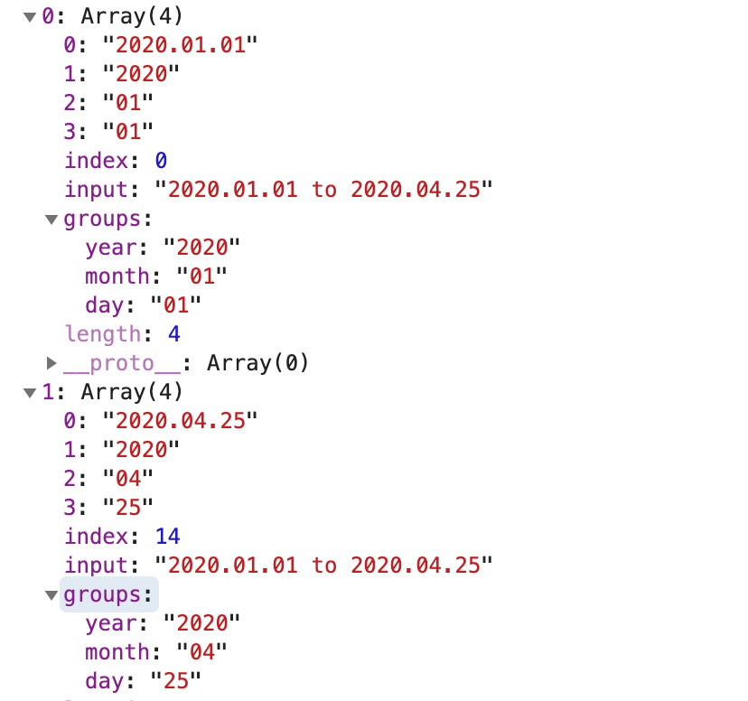

ECMAScript规范的最新动向这个文章一直在更新每次tc39的会议结论，现在ECMAScript2020已经定稿了，顺便总结下ECMAScript2020有哪些新特性。这次比较多，一共有9个提案到了stage4。
import.meta
- 提案
- slide
- 给模块内部提供一种获取上下文信息的途径
1
2
3
4
5
6
7
8
9
10
11
12
13<script type="module" src="path/to/hamster-displayer.mjs" data-size="500"></script>
(async () => {
const response = await fetch(new URL("../hamsters.jpg", import.meta.url));
const blob = await response.blob();
const size = import.meta.scriptElement.dataset.size || 300;
const image = new Image();
image.src = URL.createObjectURL(blob);
image.width = image.height = size;
document.body.appendChild(image);
})();
for-in mechanics
Nullish coalescing Operator
- 提案
- slide
- 用来解决判断属性值是否为null或者undefined,因为如果用
||,那为false的情况也会命中这个逻辑1
2
3
4
5
6
7
8
9const undefinedValue = response.settings.undefinedValue || 'some other default'; // result: 'some other default'
const nullValue = response.settings.nullValue || 'some other default'; // result: 'some other default'
const undefinedValue = response.settings.undefinedValue ?? 'some other default'; // result: 'some other default'
const nullValue = response.settings.nullValue ?? 'some other default'; // result: 'some other default'
// 可以和Optional Chaining结合起来用
const undefinedValue = response?.settings?.undefinedValue ?? 'some other default'; // result: 'some other default'
const nullValue = response?.settings?.nullValue ?? 'some other default'; // result: 'some other default'
Optional Chaining
- 提案
- 用来解决判断属性是否存在时，代码容易写的很长
1
2var street = user.info && user.info.address && user.info.address.street;
var street = user.info?.address?.street;
globalThis
- 提案
- 统一多环境下this的命名，在之前的提案中，叫global，最终改名叫globalThis。以后想使用this，又想让代码在多个环境兼容，就使用globalThis。
Promise.allSettled
- 提案
因为Promise.all会在有一个reject的时候，就直接reject，并且其他resolve的结果都会丢弃，对于想知道所有结果（无论resolve还是reject）的情况下，就必须重新包装一下，如下代码：
1
2
3
4
5
6
7
8
9
10
11
12
13
14function reflect(promise) {
return promise.then(
(v) => {
return { status: 'fulfilled', value: v };
},
(error) => {
return { status: 'rejected', reason: error };
}
);
}
const promises = [ fetch('index.html'), fetch('https://does-not-exist/') ];
const results = await Promise.all(promises.map(reflect));
const successfulPromises = results.filter(p => p.status === 'fulfilled');而有了allSettled方法后，就不需要这样了，如下：
1
2
3const promises = [ fetch('index.html'), fetch('https://does-not-exist/') ];
const results = await Promise.allSettled(promises);
const successfulPromises = results.filter(p => p.status === 'fulfilled');
import()
- 提案
- ES2015就写入规范的import，原生提供了静态的、异步的加载模块的方式
- import()用来支持动态加载模块，返回一个Promise
1
2
3
4import('a.js')
.then(myModule => {
console.log(myModule.default);
});
BIGINT
- 提案
新增一个数值类型：BigInt，用来表示大于2^53和小于-2^53的整数。
1
typeof 123n === 'bigint'
Number和BigInt不能互转
- 重载了+ / 等运算符
String.prototype.matchAll
- 提案
返回一个类数组，[[match1],[match2]]
1
2
3var text = "2020.01.01 to 2020.04.25";
var regexp = /(?<year>\d{4}).(?<month>\d{2}).(?<day>\d{2})/g;
var results = Array.from(text.matchAll(regexp));console.log(results)结果
